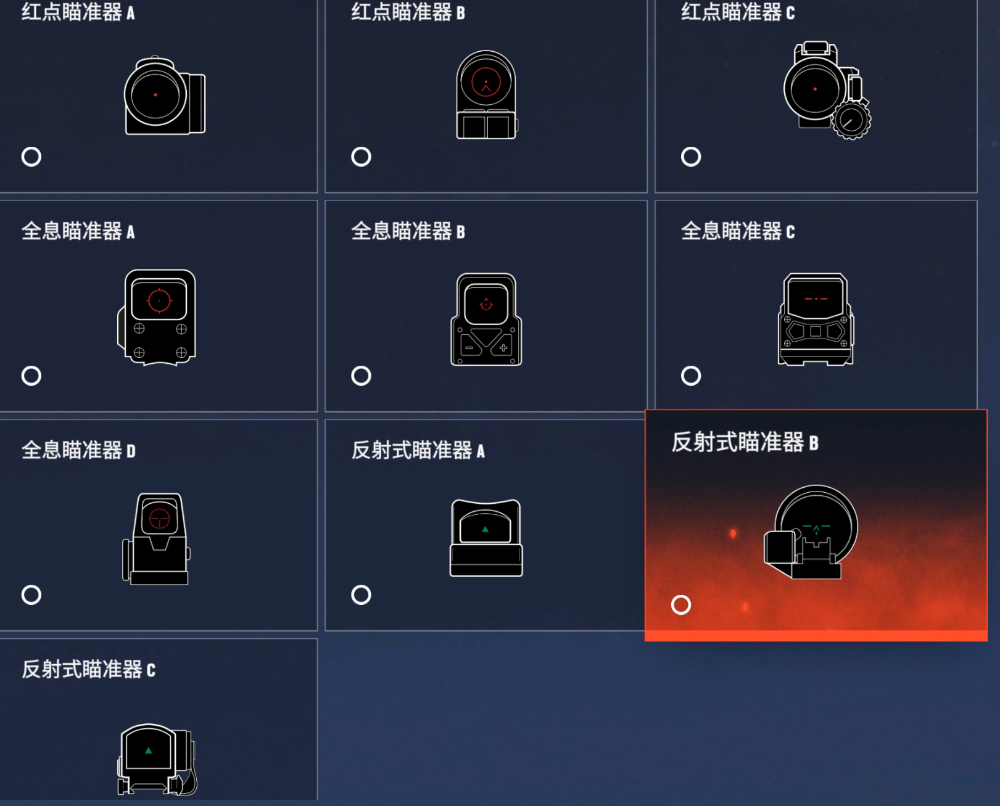
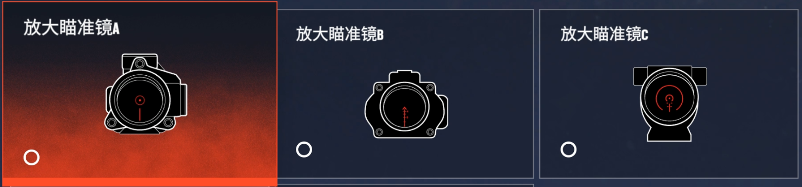
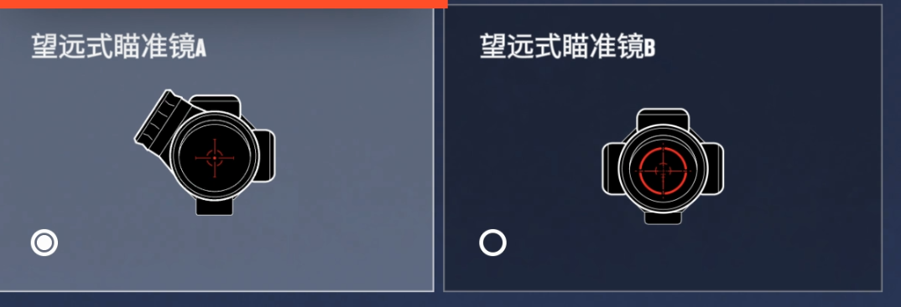

v3 改动：图片全部换成 Bruce 的游戏内实拍截图（本地托管，告别 Fandom 命名坑）；2.5x 补回第 3 款；以游戏内实际布局为准。
本版本覆盖：10 款 1.0x（Red Dot × 3 + Holographic × 4 + Reflex × 3）+ 5 款倍镜（2.5x × 3 + 3.5x × 2）+ 4 款专属内置瞄具。
⚠️ Y9S1 Operation Deadly Omen 倍镜重构：删除了 Scope 1.5x / 2.0x / 3.0x，当前版本倍镜只保留 2.5x Magnified 系列 和 3.5x Telescopic 系列。


